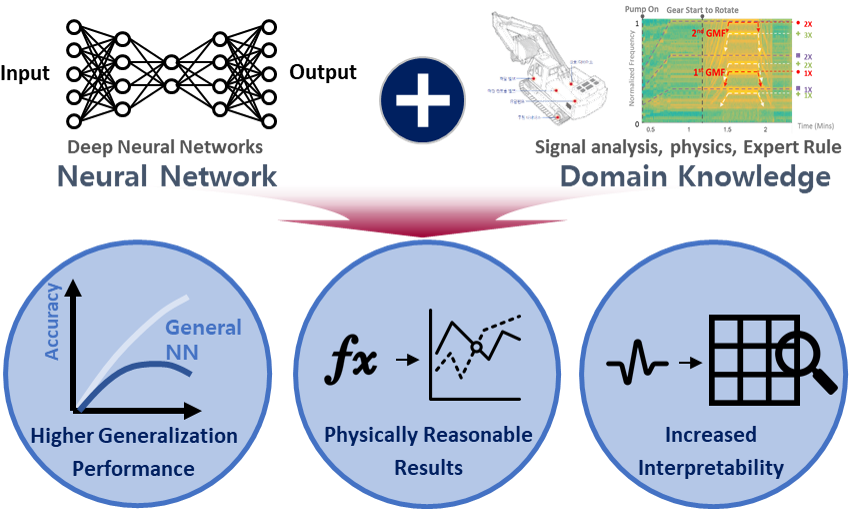
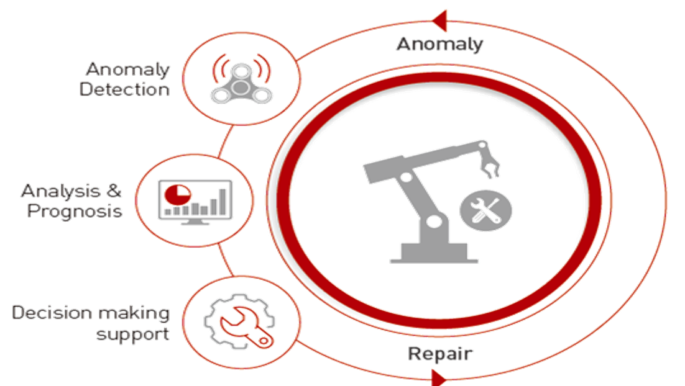
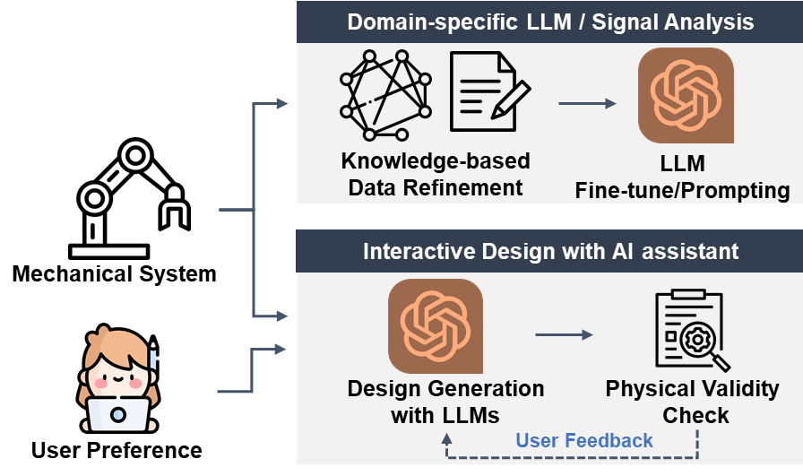
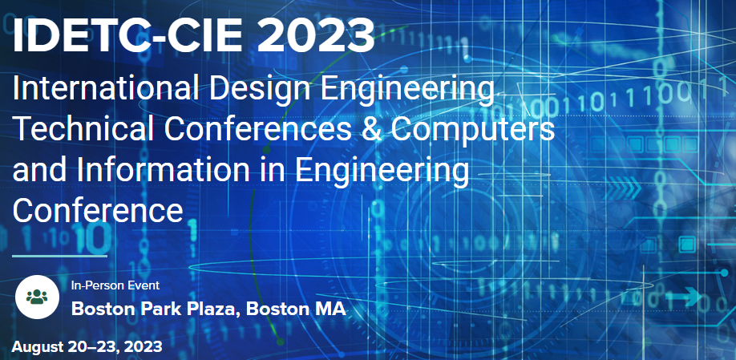
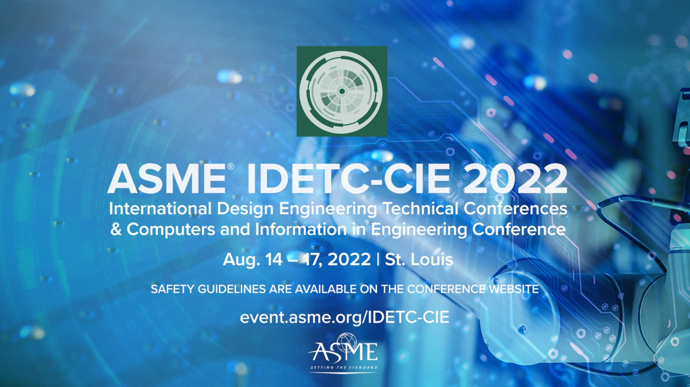
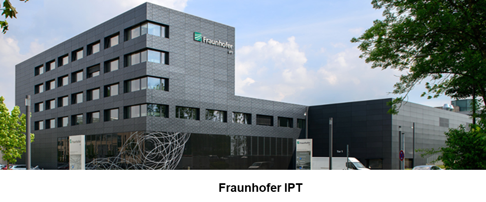

Prognostics and Health Management
Fault diagnosis, anomaly detection, and predictive maintenance for rotating machines, thermal power plants, and complex industrial systems.
Personal Homepage
Hi, I am Hyeongmin. I am currently a Staff Engineer at Samsung Research, and this is my small home for work, research notes, and the things I have been building around engineering AI.
I started from mechanical engineering, spent my graduate and postdoctoral years studying PHM and domain-informed AI at Seoul National University, and now work on practical AI systems that use knowledge graphs, LLMs, and RAG.
About
This site is mainly a personal introduction page. It keeps together my background, research interests, old study notes, and links that are useful when someone wants to know what I work on.
I received my B.S. in Mechanical Engineering from Seoul National University in 2019, then continued Ph.D. and postdoctoral research at HAI LAB. My work has mostly lived between mechanical systems and AI: fault diagnosis, domain-informed neural networks, design optimization, and LLM-based engineering workflows.
Research
Fault diagnosis, anomaly detection, and predictive maintenance for rotating machines, thermal power plants, and complex industrial systems.
Neural networks that use physics, signal analysis, expert rules, or structured domain priors to improve generalization and interpretability.
AI methods for design generation, performance prediction, inverse modeling, reinforcement learning, and design parameter optimization.
Engineering datasets, knowledge graphs, RAG workflows, and LLM agents that can support design reasoning, signal analysis, and physical validity checking.
Research Thread
A recurring theme in my work is that engineering AI should not stop at numerical prediction. It should expose useful structure: what signal patterns matter, which physical constraints are being respected, and how a human engineer can use the result.



Experience
Working on practical AI systems that connect domain knowledge, LLMs, RAG, and intelligent agents for engineering applications.
Research on PHM, DINN, AI-driven design, and engineering applications of domain-informed machine learning.
Foundation in mechanical systems, design, dynamics, and engineering analysis.
Activities
Window Size and Sampling Rate Selection for Cost-optimal Deep Learning-based Fault Diagnosis.

Convolutional Auto-Encoder-Based Boiler Tube Leakage Detection Method in a Thermal Power Plant.

A Multi-scale Residual Network with Attention Mechanism for Fault Diagnosis of Rotating Machines.

Collaborative research on inverse modeling and reinforcement learning for design parameter optimization in manufacturing.
Extra
I keep older lecture notes and study materials in a separate archive so this homepage can stay focused while the earlier material remains available.
Open extra archiveContact